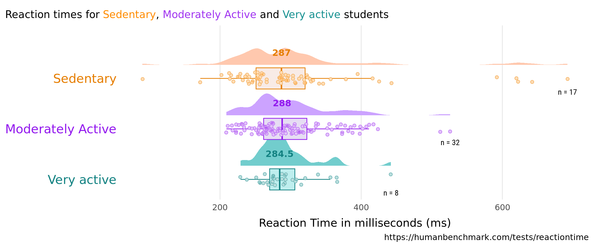
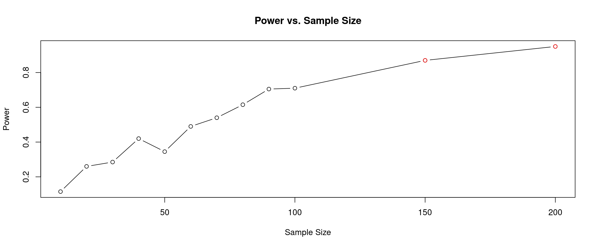

Whenever new information is collected by our form the code behind this report can be run with a single button-push to update the document. This small analytical project also demonstrates an unbroken chain between raw data and published report.


run_plot <- function(x = "Activity"){
if (x == "Activity") {
table <- table %>%
rename("Activity" = `Would you describe yourself as? Sedentary: 30 minutes of physical activity a day. Moderately active: You average 30 to 60 minutes of physical activity a day. Very active: You average more than 60 minutes of physical activity`) %>%
mutate(Activity = factor(Activity, levels = c("Sedentary", "Moderately Active", "Very active"))) %>%
mutate(id = as.character(.[[2]]))
sub <- 'Reaction times for <span style ="color:#FF8C00">Sedentary</span>, <span style = "color:#A034F0">Moderately Active</span> and <span style = "color:#159090">Very active</span> students'
pal <- c("#FF8C00", "#A034F0", "#159090")
} else if (x == "Hand") {
table <- table %>%
rename("Hand" = `Are you right-handed, left-handed or ambidextrous`) %>%
mutate(Hand = factor(Hand, levels = c("right-handed", "left-handed", "ambidextrous"))) %>%
mutate(id = as.character(.[[2]]))
pal <- c("#E69F00", "#0072B2", "#009E73")
sub <- 'Reaction times for <span style ="color:#E69F00">right-handed</span>, <span style = "color:#0072B2">left-handed</span> and <span style = "color:#009E73">ambidextrous</span> students'
}
table <- table %>%
group_by(.data[[x]]) %>%
pivot_longer(
cols = starts_with("Using your"),
names_to = "Attempt",
values_to = "Score",
)
df_unique_counts <- table %>%
group_by(.data[[x]]) %>%
summarise(unique_count = n_distinct(.data[["id"]]),
y = max(`Score`, na.rm = T) + .025) %>%
ungroup()
table %>%
filter(!is.na(.data[[x]])) %>%
ggplot(aes(x = fct_rev(.data[[x]]), y = `Score`)) +
ggdist::stat_halfeye(
aes(color = .data[[x]],
fill = after_scale(lighten(color, .5))),
adjust = .5,
width = .75,
.width = 0,
justification = -.4,
point_color = NA) +
geom_boxplot(
aes(color = .data[[x]],
color = after_scale(darken(color, .1, space = "HLS")),
fill = after_scale(desaturate(lighten(color, .8), .4))),
width = .42,
outlier.shape = NA
) +
geom_point(
aes(color = .data[[x]],
color = after_scale(darken(color, .1, space = "HLS"))),
fill = "white",
shape = 21,
stroke = .4,
size = 2,
position = position_jitter(seed = 1, width = .12)
) +
geom_point(
aes(fill = .data[[x]]),
color = "transparent",
shape = 21,
stroke = .4,
size = 2,
alpha = .3,
position = position_jitter(seed = 1, width = .12)
) +
stat_summary(
geom = "text",
fun = "median",
aes(label = round(..y.., 2),
color = .data[[x]],
color = after_scale(darken(color, .1, space = "HLS"))),
family = "Roboto Mono",
fontface = "bold",
size = 4.5,
vjust = -3.5
) +
geom_text(data = df_unique_counts,
aes(x = .data[[x]], y = `y`, label = paste("n =", unique_count)),
hjust = 0.5, vjust = 3, size = 4, family = "Roboto Condensed")+
coord_flip(xlim = c(1.2, NA), clip = "off") +
scale_color_manual(values = pal, guide = "none") +
scale_fill_manual(values = pal, guide = "none") +
labs(
x = NULL,
y = "Reaction Time in milliseconds (ms)",
title = "",
subtitle = paste(sub),
caption = "https://humanbenchmark.com/tests/reactiontime"
) +
theme_minimal(base_family = "Zilla Slab", base_size = 15) +
theme(
panel.grid.minor = element_blank(),
panel.grid.major.y = element_blank(),
axis.ticks = element_blank(),
axis.text.x = element_text(family = "Roboto Mono"),
axis.text.y = element_text(
color = rev(darken(pal, .1, space = "HLS")),
size = 18
),
axis.title.x = element_text(margin = margin(t = 10),
size = 16),
plot.title = element_markdown(face = "bold", size = 21),
plot.subtitle = element_markdown(),
plot.title.position = "plot")
}
run_plot()Linear Model equation
\[
\begin{aligned}
\operatorname{Score}_{i} &\sim N \left(\alpha_{j[i]}, \sigma^2 \right) \\
\alpha_{j} &\sim N \left(\gamma_{0}^{\alpha} + \gamma_{1}^{\alpha}(\operatorname{Hand}_{\operatorname{left-handed}}) + \gamma_{2}^{\alpha}(\operatorname{Hand}_{\operatorname{ambidextrous}}), \sigma^2_{\alpha_{j}} \right)
\text{, for id j = 1,} \dots \text{,J}
\end{aligned}
\]
Model Summary table
| Score | |||
|---|---|---|---|
| Predictors | Estimates | CI | p |
| (Intercept) | 304.90 | 285.55 – 324.25 | <0.001 |
| Hand [left-handed] | -34.78 | -96.95 – 27.39 | 0.271 |
| Hand [ambidextrous] | -28.15 | -107.00 – 50.70 | 0.482 |
| Random Effects | |||
| σ2 | 1100.12 | ||
| τ00 id | 4245.97 | ||
| ICC | 0.79 | ||
| N id | 55 | ||
| Observations | 229 | ||
| Marginal R2 / Conditional R2 | 0.026 / 0.800 | ||

# https://besjournals.onlinelibrary.wiley.com/doi/10.1111/2041-210X.12306
library(tidyverse)
sample_sizes <- c(10, 20, 30, 40, 50, 60, 70, 80, 90, 100, 150, 200)
n <- 200
simulate_power <- function(sample_size) {
num_significant <- 0
for(i in 1:n){
sample1 <- rnorm(n=sample_size, mean =289, sd =80)
sample2 <- rnorm(n=sample_size, mean = 260, sd = 80)
lm_model <- lm(c(sample1, sample2) ~ rep(c("Group1", "Group2"), each = sample_size))
if (summary(lm_model)$coefficients[2,4] < 0.05) {
num_significant <- num_significant + 1
}
}
return(num_significant / n)
}
simulation_results <- map_dbl(sample_sizes, simulate_power)
greater_than_80 <- simulation_results > .8
# Plot the points with different colors
plot(sample_sizes, simulation_results, type = "b", xlab = "Sample Size", ylab = "Power", main = "Power vs. Sample Size")
points(sample_sizes[greater_than_80], simulation_results[greater_than_80], col = "red")